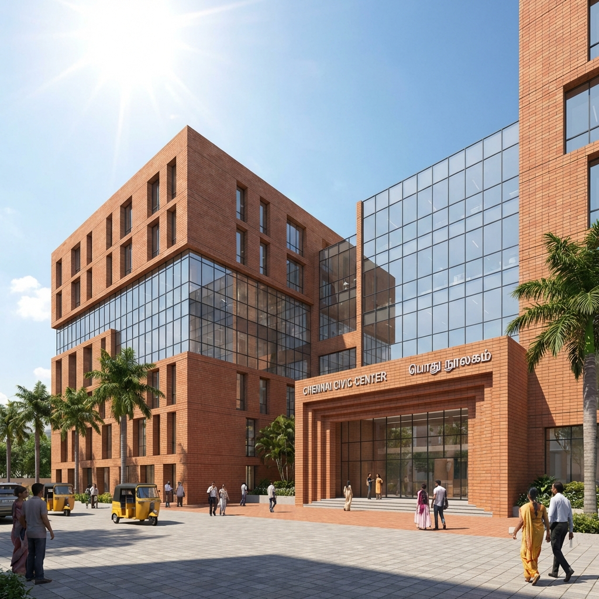
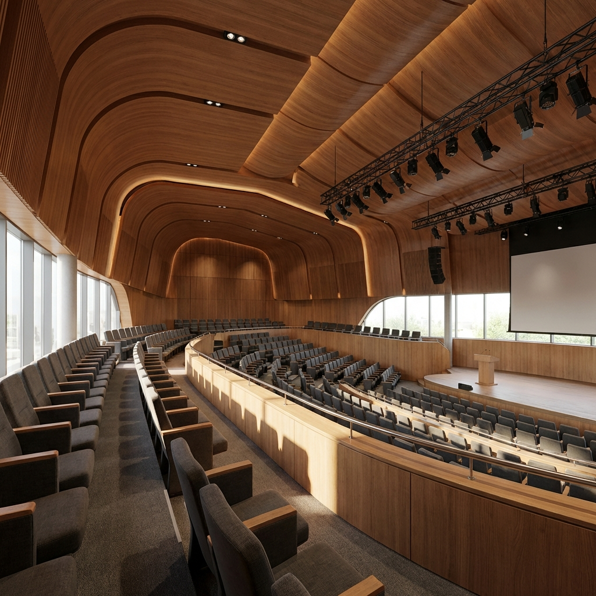

Kadal (The Fisherman's Pavilion)
Metaphor & Community
Kadal celebrates the ancestral traditions of the local fishing community. The design is inspired by the "Koodu" (nest) — translating this symbol of shelter and belonging into an ethereally floating structure suspended between coconut trees, positioned where the land meets the sea.
Natural Craft
Built from bamboo, rope, and hand-woven palm leaf mats, every material is natural and locally sourced. The modular assembly is designed to be erected and dismantled with minimal effort, leaving no trace behind — a structure that exists in harmony with the coastal ecosystem.
 Process / Concept
Process / Concept

